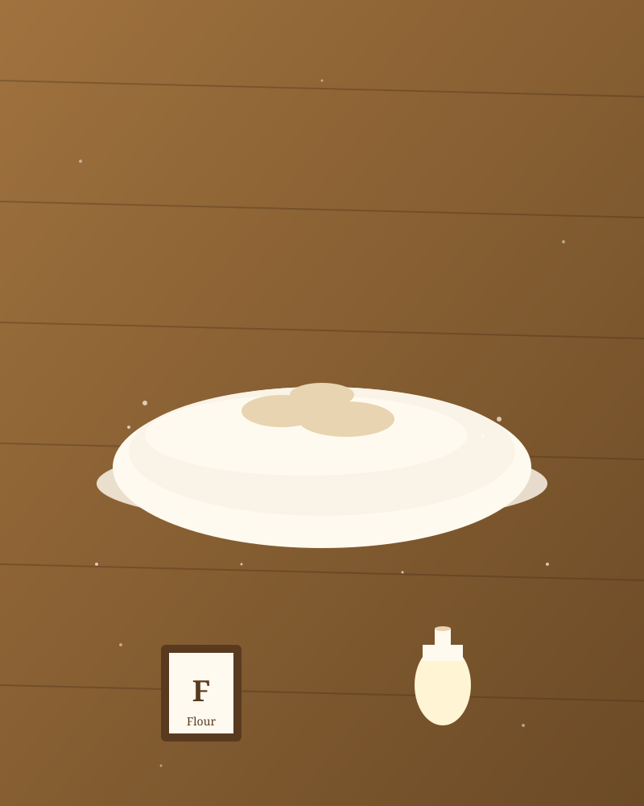

Flour & Bloom started, like a lot of good things, by accident. In the spring of 2021 the world had slowed down, the supermarket shelves were empty of bread, and a borrowed copy of Tartine Bread sat on the kitchen counter for two weeks before someone finally cracked it open.
The first loaf was flat. The second was burnt. The third — the third was the one. Crackling crust, sour tang, holes you could almost see through. We have been chasing that loaf ever since.
What began as a flour-dusted hobby is now a small, deliberate bakery. We work out of a home studio, bake three days a week, and only take on as many orders as two hands can shape. Everything is mixed by feel, not machine. Everything is fermented slowly, because slow is where the flavour lives.
We do not want to be the biggest bakery. We want to be the one you remember.
Three things we will not compromise on.
Long, cold ferments. We give the dough 24 to 48 hours so the flavour has time to develop. There are no shortcuts in this kitchen.
We bake in batches we can count on one hand. If we sell out by noon, we sell out by noon. Quality over quantity, every single time.
Real butter, real vanilla, organic flour from a mill we can name. No preservatives, no shortcuts, nothing you cannot pronounce.